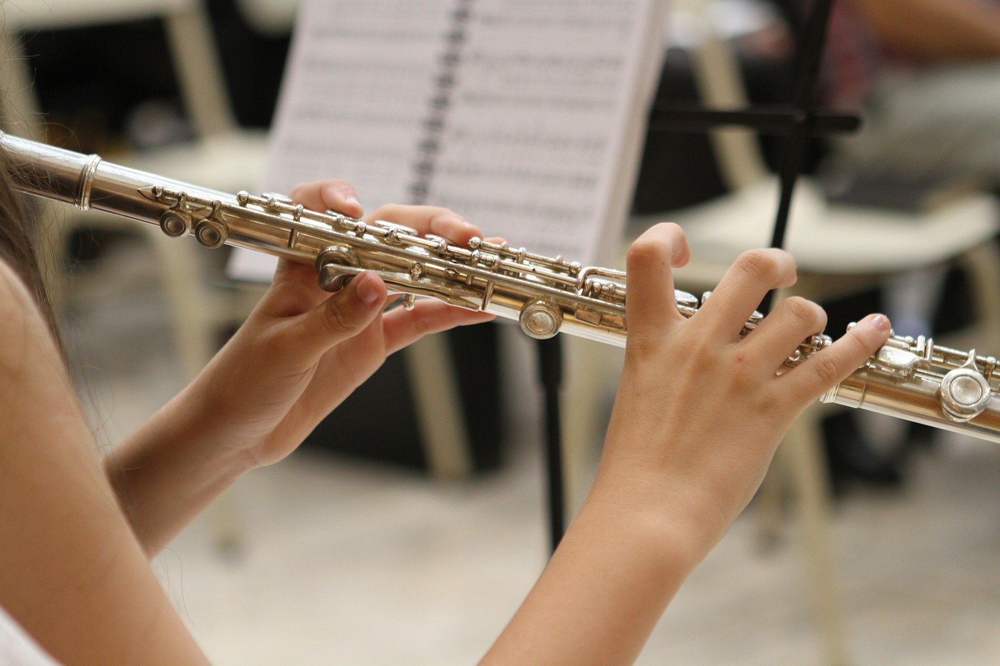

Bajo electrico
Curso practico con lectura musical y tablatura acompañamiento de temas clasicos de rock y remanticos
Deseo más información

Clarinete
Aprenda a tocar el clarinete mediante lectura musical en muy poco tiempo: Musica romántica, internacional y clasica.
Deseo más información
Bateria acustica
Aprenda con los mejores instructores a tocar la bateria como un profesional.
Deseo más información
Guitarra electrica
Aprende a tocar guitarra electrica con técnicas nodernas, con un repertorio de los grandes grupos de reck, con lectura nusical y tablatura.
Deseo más información
Canto y vocalización
A todos nos gusta cantar y qué mejor si cantamos con técnicas nodernas y apropiadas sobre música que a uno le agrada.
Deseo más información

Teclado
Interprete melodías con acompañamiendo automático, interprete en poco tiempo aquellas canciones que lo apasionan, aprendiendo mediante lectura musical.
Deseo más información
Violin
Con el método Suzuki aprenda a tocar en poco tiempo como los grandes maestros.
Deseo más información

Piano
Instrumento clásico por excelencia, enseñanza práctica con los métodos Suzuki, Zcerny, Hanon, Pozoli y Burman. Con repertorio nacional, internacional y clásico.
Deseo más información

Zampoña
Hermoso instrumento andino de fácil aprendizaje, interprete en poco tiempo repertorio muy variado.
Deseo más información